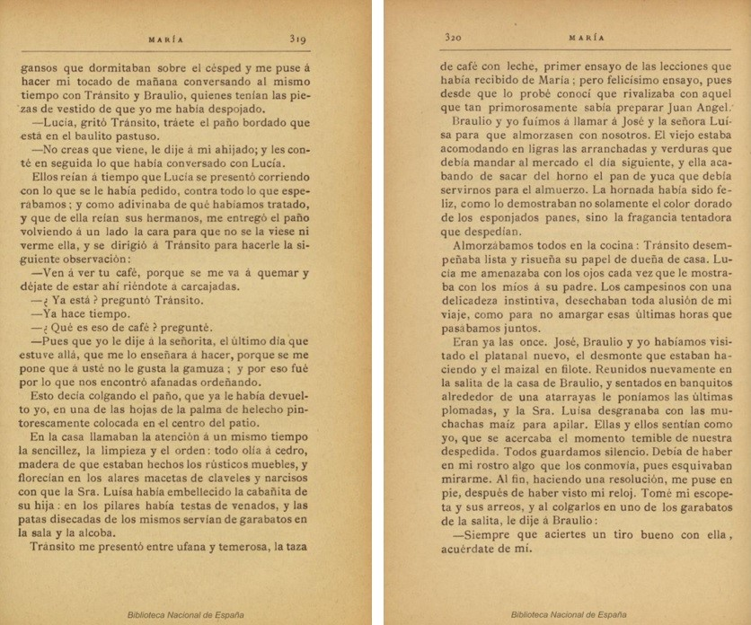
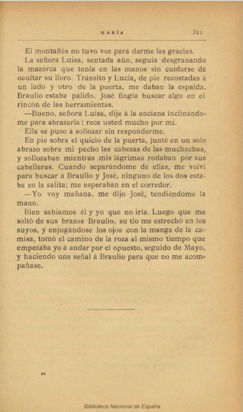
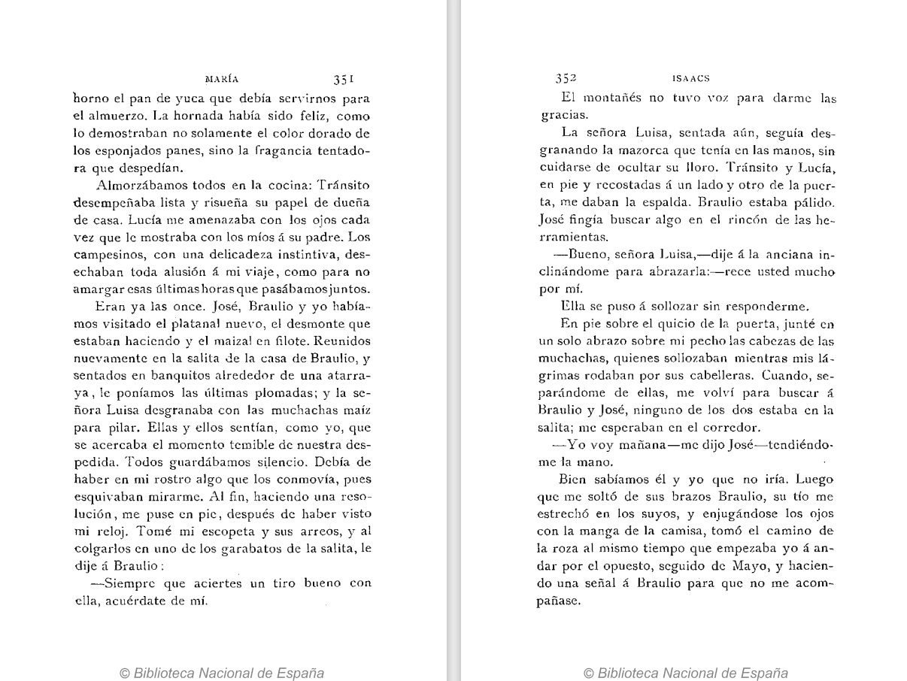

Texto base
G = primera edición de la obra María de Jorge Isaacs, Bogotá, 1867, Imprenta de Gaitán.
Testimonios
E = segunda edición de la obra, Bogotá, 1869, Estereotipia de Medardo Rívas
T = tercera edición de la obra, Barcelona, 1880, Tipolitografía de Luis Tasso
D = Barcelona, 1882, Biblioteca «Arte y Letras»

A = Barcelona, 1884, Biblioteca «Arte y Letras»
L = Barcelona, 1886, Biblioteca «Arte y Letras»

R = Barcelona, 1890, Ramón Espasa y Compañía, Editores

M = Barcelona, 1898, Casa Editorial Maucci
H = París, 1898, Imprenta de Granier Hermanos
C = Madrid, 1899, Librería Agrícola y Casa Editorial

S = Barcelona, 1910, Casa Editorial Sopena
B = Bogotá, 1942, ABC
N = Bogotá, Ministerio de Cultura: Biblioteca Nacional de Colombia, 2015.